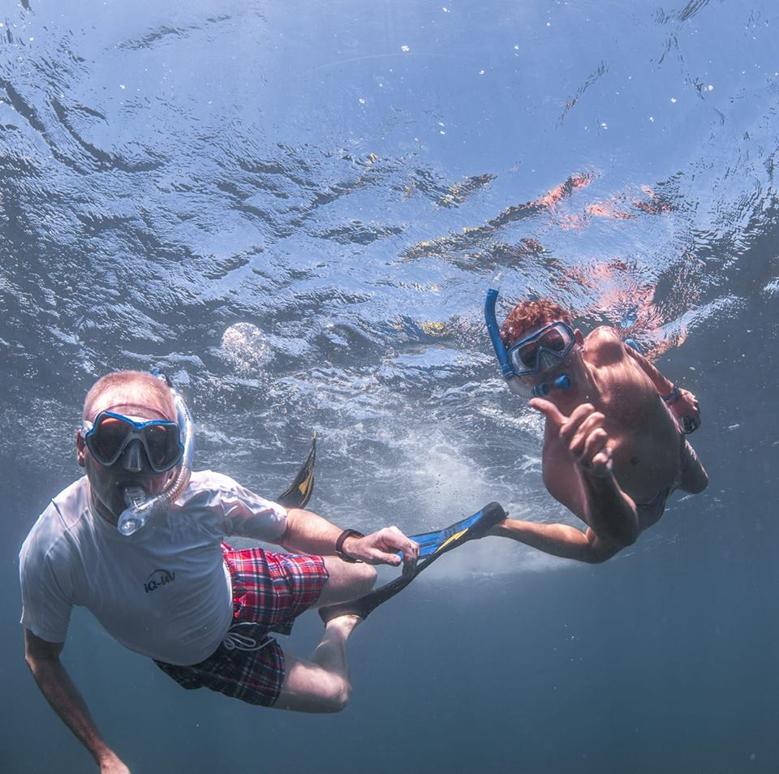
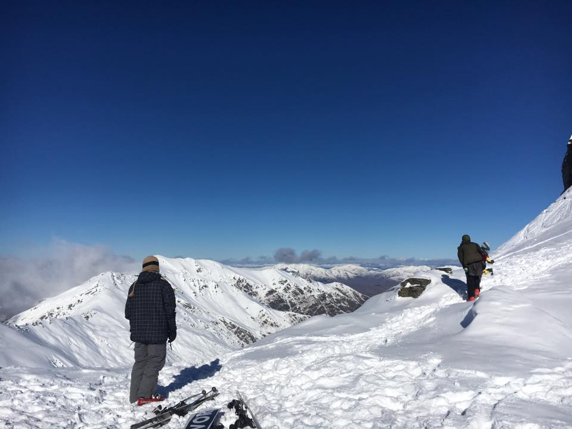
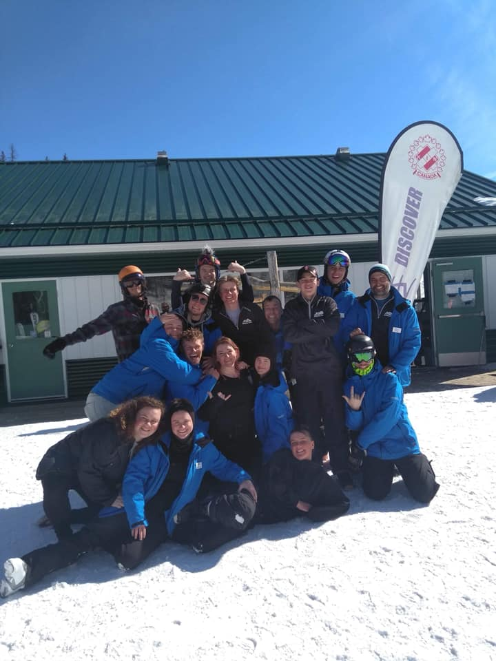
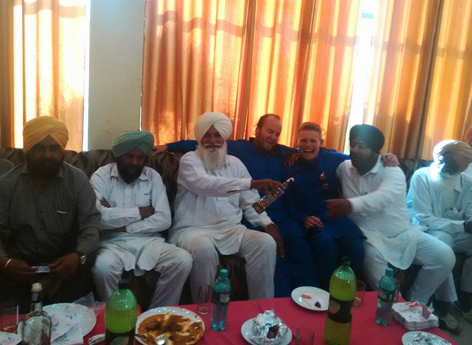
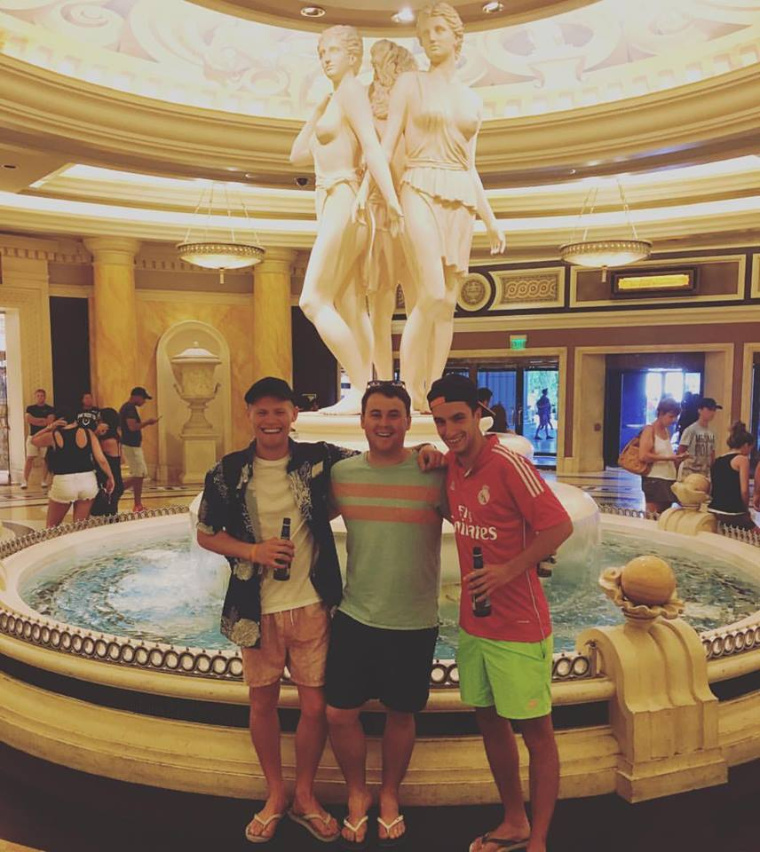
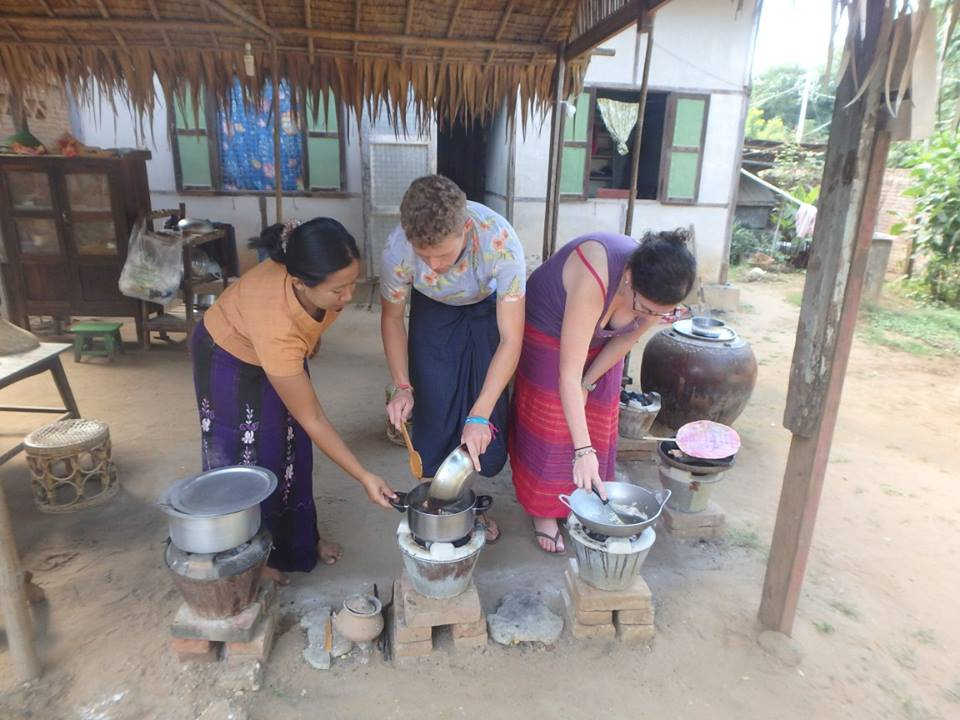

Capgemini, UK
My first and still my only exposure to corporate life and an insight into tech. I worked at the Telford offices as a ‘business-co-ordinator’ which is a posh job title for someone who chased programmers around for overdue projects.
I was solely based in the more commercial area of the business and was not really involved in the tech side of things. I learned a great deal during my time however and I would say this was my first ‘serious’ job. After 18 months at Capgemini, the firm restructured which spelled the end of my time there. Redundancies were made and I personally was offered the ultimatum of, learn the tech skills necessary to stay, or quit. During this time i had little to no interest in code or programming, so i left Capgemini. 2 months later i was on a one-way flight to Australia.
Visit Capgemini's website here.Australia
Working at a small town tavern in the outback, pruning on a vineyard on the south-west coast and working as a cook and snorkel guide in beautiful Coral Bay on the Ningaloo Reef. These are some of my job highlights from my 2 years in Australia. Not only were these unbelievable experiences in amazing locations, I really grew as a person and became more and more confident in the workplace.
Skills and knowledge I acquired during my time included, cooking and barista skills, customer service skills, knowledge of health and safety practices and guiding and snorkelling skills including knowledge of coral reefs. Travelling on my own across the other side of the world also gave me great life experience and great confidence in that anything was achievable.
Sandwiched between my years in Australia, I fancied experiencing life across the Tasman Sea, in New Zealand.
New Zealand
From stunning beaches and great fishing up north in the Bay of Islands to Skiing down in the beautiful southern alps, for me New Zealand has everything and is one of the best places ive ever been. During my time NZ or Aotearoa as the Maoris say, i found myself working as a barista and tour guide assistant up in the Waitangi Treaty Grounds. I highly significant for all New Zealanders, check out more info here on the Treaty Grounds.
I also worked down in Fox Glacier as a heli-tour assistant. Amazing rainforests and the incredible sights of the Fox and Franz Josef glaciers made this a memorable place for me. My job as a heli-tour assistant was pretty being camped up on the glacier all day, assisting customers in and out of the helicopter as they left and arrived. Great views and loads of free helicopter rides! New Zealand was the place I really started to get passionate about Skiing. I did 2 seasons down in Queenstown at Coronet Peak ski hill working in as a senior barista
Canada
I arrived in Canada November 2018. The main reason that brought me here was my goal of taking my love of skiing up a notch, and to become a CSIA qualified ski instructor. I went onto pass my level 1 and 2 exams before securing jobs at Hidden Valley Ski Hill and Marmot Basin in Jasper, Alberta. My ski skills massively improved and my love of skiing went to a whole new level.
The experience i gained in teaching skiing was a partcular highlight. To be able to ski everyday and to share my passion for the sport with other like-minded people was fantastic, and to call it my job was even better!
After a great first ski season as an instructor, i am currently continuing my adventures over on Vancouver Island working in a fishing resort….
my other travels
Throughout the past years and in-between all the different places i have lived and worked, i have also travelled throughout south-east Asia, volunteered in Myanmar, been to a friends arranged wedding in rural Punjab, India and travelled up the west coast of the USA!
  